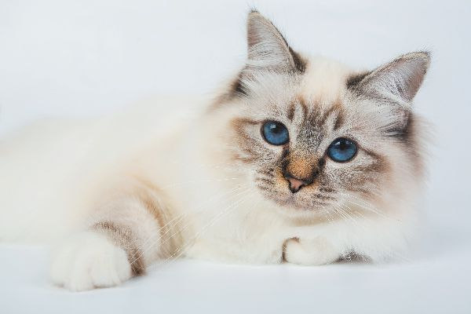
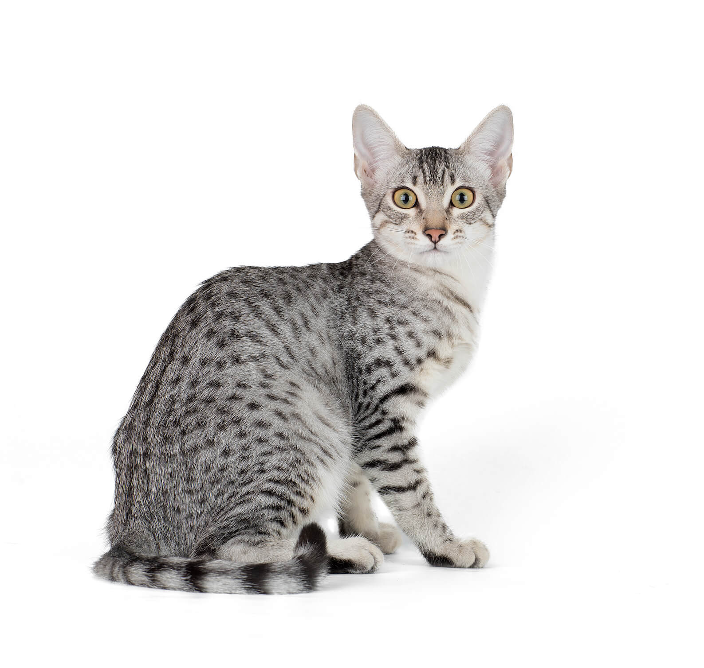
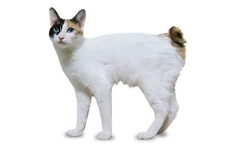
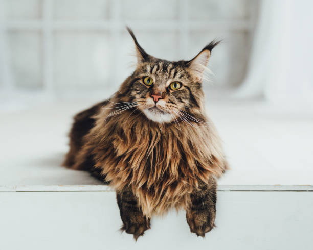
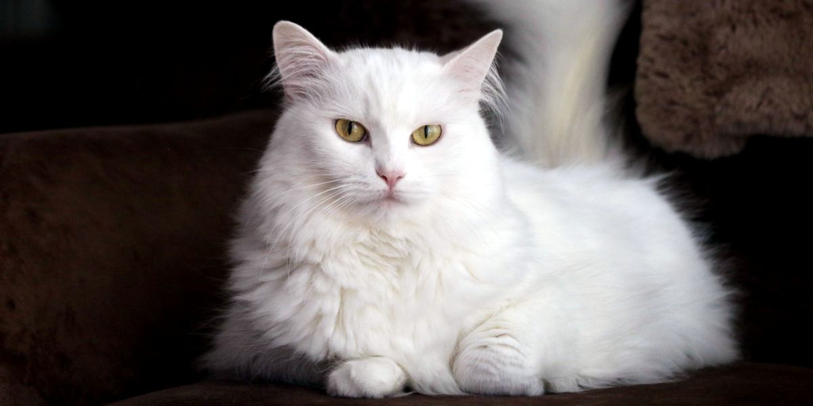

| Cat |
Breed |
Average Color |
Average Coat |
Average Size |
Average Lifespan |
 |
American Curl |
White, black, blue, red, cream, chocolate, lilac, silver, golden, plus various patterns and shadings |
Short, semi-long |
Small to Medium, with males weighing 7 to 10 pounds and females weighing 5 to 8 pounds |
13+ years |
|  |
Birman |
Seal point, blue point, chocolate point, lilac point |
Medium to long |
Medium to Large, with males weighing 9 to 15 pounds and females weighing 6 to 10 pounds |
15+ years |
|  |
Egyptian Mau |
Silver, bronze and smoke |
Short to medium |
Medium, with males weighing 10 to 14 pounds and females weighing 6 to 10 pounds |
12 to 15 years |
|  |
Japanese Bobtail |
White, black, red, blue and cream, plus various patterns and shadings |
Varies between long and short |
Medium, with males weighing 7 to 10 pounds and females weighing 5 to 7 pounds |
15 to 18 years |
|  |
Maine Coon |
Most commonly brown tabby, but other colors and patterns are possible |
Shorter on the shoulders and longer on the stomach, smooth, shaggy |
Large, with males weighing from 12 to 15 pounds and females weighing from 9 to 12 pounds |
10 to 13 years |
 |
Ragdoll |
Seal, blue, chocolate, lilac, red and cream, plus various patterns and shadings, including bi-color, van, colorpoint and mitted |
Semi-long, plush, silky |
Medium, weighing 10 to 15 pounds |
12 to 17 years |
 |
Russian Blue |
Blue with silver tips |
Short, dense, fine, plush |
Medium, weighing 8 to 15 pounds |
10 to 15 years |
|  |
Turkish Angora |
White, black, blue, cream and red, plus various patterns and shadings |
Semi-long |
Medium, with males weighing 7 to 10 pounds and females weighing 5 to 8 pounds |
12 to 18 years |